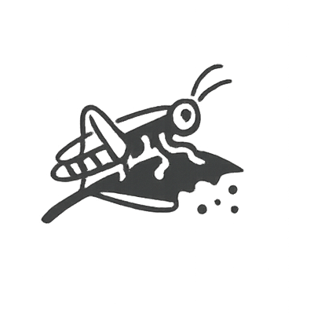
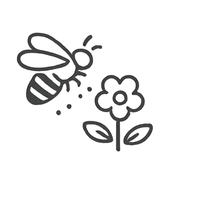
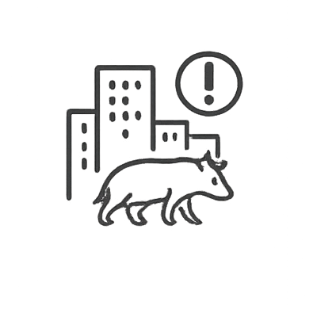
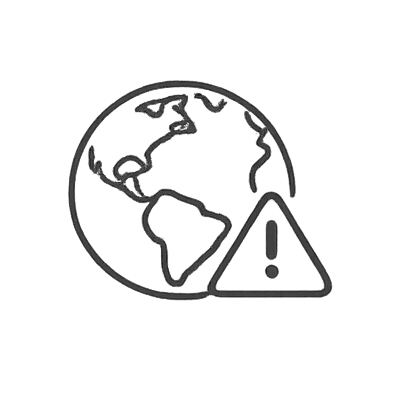

O Custo Real da Extinção
Quando perdemos uma espécie, não perdemos apenas um animal. Perdemos equilíbrio, saúde ambiental e o futuro do nosso próprio planeta. Conheça as consequências irreversíveis da extinção no Brasil.
Espécies nativas atualmente ameaçadas de extinção em território brasileiro.
Espécies de nossa fauna em estado crítico e risco iminente de desaparecer.
Consequências Irreversíveis
A extinção de animais no Brasil não é apenas uma perda ambiental — é uma ameaça direta à nossa sobrevivência, economia e qualidade de vida. Cada espécie que desaparece desencadeia uma reação em cadeia com impactos profundos e duradouros.
Desequilíbrio da Fauna
A extinção rompe a harmonia da natureza. Sem uma espécie, seus predadores ficam sem alimento e outras populações crescem descontroladamente, afetando a sobrevivência de todo o bioma.

Multiplicação de Pragas
O sumiço de predadores transforma presas em pragas. Com o declínio da onça-pintada, por exemplo, porcos selvagens se multiplicaram sem controle e passaram a destruir diversas plantações.

Perda de Serviços Naturais
Processos naturais essenciais começam a falhar. O declínio da polinização e a redução no combate biológico a pragas desestabilizam o meio ambiente e ameaçam o bem-estar humano.

Invasão nas Cidades
Com a perda das florestas, os animais selvagens são forçados a buscar abrigo nas cidades. Isso cria riscos de acidentes para a população e perigo de maus-tratos aos bichos.
Efeito Borboleta Ecológico
O desaparecimento de uma espécie nunca é isolado. Ações que geram extinção em um bioma podem desencadear consequências graves e totalmente inesperadas em regiões completamente diferentes.

Ameaça ao Nosso Futuro
O Brasil abriga um quarto das espécies do planeta. A extinção não afeta apenas o futuro, mas já prejudica diretamente a nossa economia, saúde e segurança hoje.